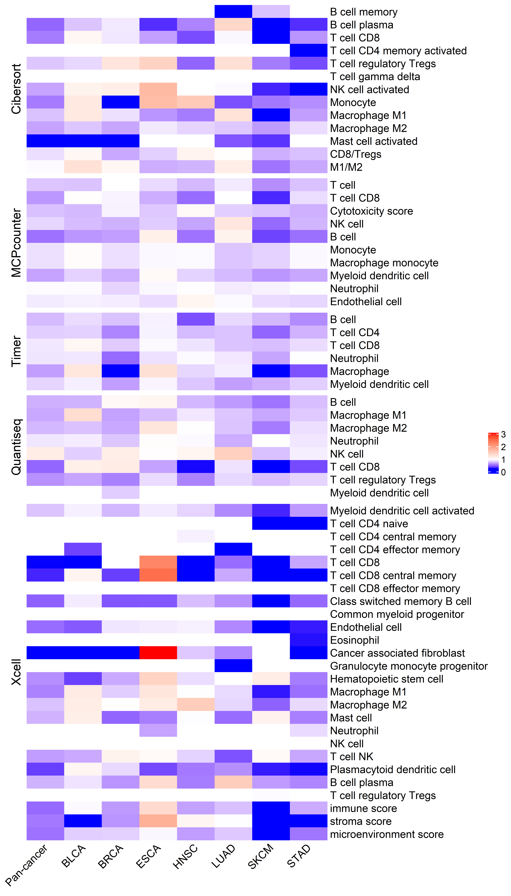

Extrachromosomal DNA is associated with decreased immune cell infiltration and antigen presentation, represents a potential cancer immune evasion mechanism
library(dplyr)
library(ggplot2)
library(tidyr)
library(ggpubr)
library(NeoEnrichment)
library(ggprism)
library(cowplot)
library(patchwork)Sample Distribution
EcDNA status information was determined using AmpliconArchitect from WGS data as described previously (Kim et al., 2020). Gene expression data are available for the majority of TCGA but not PCAWG datasets. So for downstream immune infiltration and gene expression analysis, we only keep TCGA samples.
We first look at the ecDNA status distribution of samples:
dt <- readxl::read_xlsx("../data/Extrachromosomal DNA is associated with oncogene amplification and poor outcome across multiple cancers.xlsx",sheet = 3)
##keep TCGA samples
dt <- dt %>%
filter(tumor_or_normal!="normal") %>%
filter(grepl("TCGA",sample_barcode))
dt <- dt %>% group_by(sample_barcode) %>%
summarise(ecDNA=ifelse(any(sample_classification=="Circular"),"yes","no"))
dt$cancer <- get_cancer_type(dt$sample_barcode)
dt %>% group_by(cancer) %>%
summarise(total_sample=n(),
ecDNA_postive=sum(ecDNA=="yes")) -> summ
summ <- summ %>% arrange(desc(total_sample))
summ %>% pivot_longer(cols = c("total_sample","ecDNA_postive"),
names_to = "type",
values_to = "counts") -> summ2
summ2$cancer <- factor(summ2$cancer,levels = summ$cancer)
ggplot(data=summ2,aes(x=cancer,y=counts,fill=type))+
geom_bar(stat="identity",position = "dodge")+
theme_prism()+
theme(axis.text.x = element_text(angle = 45,vjust = 1, hjust = 1))+
theme(axis.title.x = element_blank())And when combined with RNA expression data:
tpm_gene_log2 <- readRDS("../data/tpm_gene_log2.rds")
dt_exp <- dt %>% filter(sample_barcode %in% colnames(tpm_gene_log2))
dt_exp %>% group_by(cancer) %>%
summarise(total_sample=n(),
ecDNA_postive=sum(ecDNA=="yes")) -> summ
summ <- summ %>% arrange(desc(total_sample))
summ %>% pivot_longer(cols = c("total_sample","ecDNA_postive"),
names_to = "type",
values_to = "counts") -> summ2
summ2$cancer <- factor(summ2$cancer,levels = summ$cancer)
ggplot(data=summ2,aes(x=cancer,y=counts,fill=type))+
geom_bar(stat="identity",position = "dodge")+
theme_prism()+
theme(axis.text.x = element_text(angle = 45,vjust = 1, hjust = 1))+
theme(axis.title.x = element_blank())Immune cell infiltration status
We used various methods to compare immune infiltration status between samples with and without ecDNA. We first check the total immune infiltration levels quantified by ESTIMATE, Xcell immune score and Leukocyte fraction.
##ESTIMATE
pancancer_estimate_score <- readRDS("../data/pancancer_estimate_score.rds")
dt_immune1 <- inner_join(
dt %>% rename(sample=sample_barcode),
pancancer_estimate_score)
dt_immune1 %>% group_by(cancer) %>% summarise(c=sum(ecDNA=="yes")) %>%
filter(c>20)-> summ
dt_immune1 <- dt_immune1 %>%
filter(cancer %in% summ$cancer)###MCPcounter cytotoxicity score and Xcell immune score
immune <- data.table::fread("../data/infiltration_estimation_for_tcga.csv") %>%
rename(sample=cell_type) %>%
select(sample,`cytotoxicity score_MCPCOUNTER`,`immune score_XCELL`)
dt_immune2 <- inner_join(
dt %>% rename(sample=sample_barcode),
immune)
dt_immune2 %>% group_by(cancer) %>% summarise(c=sum(ecDNA=="yes"),a_c=n(),per=c/a_c) %>%
filter(c>20)-> summ
dt_immune2 <- dt_immune2 %>%
filter(cancer %in% summ$cancer)##Leukocyte fraction
immune_landscape <- readRDS("../data/immune_landscape.rds")
dt_immune3 <- inner_join(
dt %>% rename(sample=sample_barcode) %>%
mutate(sample = substr(sample,1,12)),
immune_landscape %>%
select(`TCGA Participant Barcode`,`Immune Subtype`,`Leukocyte Fraction`,`Intratumor Heterogeneity`) %>%
rename(sample=`TCGA Participant Barcode`)
) %>% filter(!is.na(`Leukocyte Fraction`))
dt_immune3 %>% group_by(cancer) %>% summarise(c=sum(ecDNA=="yes"),a_c=n(),per=c/a_c) %>%
filter(c>20)-> summ
dt_immune3 <- dt_immune3 %>%
filter(cancer %in% summ$cancer)p1 <- ggplot(data=dt_immune1,aes(x=ecDNA,y=ImmuneScore))+
geom_boxplot(size=1)+
stat_compare_means(label.x=1.2,size=5)+
theme_prism()+
labs(y="ImmuneScore (Estimate)")+
scale_x_discrete(labels=c("Non-ecDNA","ecDNA"))+
theme(axis.title.x = element_blank())
p2 <- ggplot(data=dt_immune2,aes(x=ecDNA,y=log(`cytotoxicity score_MCPCOUNTER`+1)))+
geom_boxplot(size=1)+
stat_compare_means(label.x=1.2,size=5)+
theme_prism()+
labs(y="Cytotoxicity score (MCPCOUNTER)")+
scale_x_discrete(labels=c("Non-ecDNA","ecDNA"))+
theme(axis.title.x = element_blank())
p3 <- ggplot(data=dt_immune2,aes(x=ecDNA,y=`immune score_XCELL`))+
geom_boxplot(size=1)+
stat_compare_means(label.x=1.2,size=5)+
theme_prism()+
labs(y="Immune score (XCELL)")+
scale_x_discrete(labels=c("Non-ecDNA","ecDNA"))+
theme(axis.title.x = element_blank())
p4 <- ggplot(data=dt_immune3,aes(x=ecDNA,y=`Leukocyte Fraction`))+
geom_boxplot(size=1)+
stat_compare_means(label.x=1.2,size=5)+
theme_prism()+
scale_x_discrete(labels=c("Non-ecDNA","ecDNA"))+
theme(axis.title.x = element_blank())
p1 + p3 + p4 + p2+ plot_layout(ncol = 2,nrow=2)With different methods, tumors with ecDNA consistently show significantly decreased immune scores.
We also calculated other infiltration scores including IPS Z-score, CYT and TIS:
IPS <- readRDS("../data/IPS.rds")
dt_IPS <- inner_join(
dt %>% rename(sample=sample_barcode),
IPS)
dt_IPS %>% group_by(cancer) %>% summarise(c=sum(ecDNA=="yes")) %>%
filter(c>20)-> summ
dt_IPS <- dt_IPS %>%
filter(cancer %in% summ$cancer)
p5 <- ggplot(data=dt_IPS,aes(x=ecDNA,y=AZ))+
geom_boxplot(size=1)+
stat_compare_means(label.x=1.2,size=5)+
theme_prism()+
scale_x_discrete(labels=c("Non-ecDNA","ecDNA"))+
theme(axis.title.x = element_blank())+
labs(y="IPS Z-score")
tis <- read.table("../data/tis_signature.txt")
tis$sample <- rownames(tis)
dt_tis <- inner_join(
dt %>% rename(sample=sample_barcode),
tis)
dt_tis %>% group_by(cancer) %>% summarise(c=sum(ecDNA=="yes")) %>%
filter(c>20)-> summ
dt_tis <- dt_tis %>%
filter(cancer %in% summ$cancer)
p6 <- ggplot(data=dt_tis,aes(x=ecDNA,y=V1))+
geom_boxplot(size=1)+
stat_compare_means(label.x=1.2,size=5)+
theme_prism()+
scale_x_discrete(labels=c("Non-ecDNA","ecDNA"))+
theme(axis.title.x = element_blank())+
labs(y="TIS")
cyts <- readRDS("../data/cyts.rds")
dt_cyts <- inner_join(
dt %>% rename(sample=sample_barcode),
cyts)
dt_cyts %>% group_by(cancer) %>% summarise(c=sum(ecDNA=="yes")) %>%
filter(c>20)-> summ
dt_cyts <- dt_cyts %>%
filter(cancer %in% summ$cancer)
p7 <- ggplot(data=dt_cyts,aes(x=ecDNA,y=cyts))+
geom_boxplot(size=1)+
stat_compare_means(label.x=1.2,size=5)+
theme_prism()+
scale_x_discrete(labels=c("Non-ecDNA","ecDNA"))+
theme(axis.title.x = element_blank())+
labs(y="CYT")
p5 + p6 + p7Then we look close into the difference of different immune cell types between samples with and without ecDNA using above methods:
EcDNA and tumor immune typing
Recently, several studies have classified cancers into different immune subtypes and found each subtype related to specific microenvironment. Here we used Chisq-square test to check the association between ecDNA status and immune subtypes. We used two classification methods: 1) Pan-cancer immunogenomic analysis has classified cancer into six immune subtypes—wound healing, IFN-γ dominant, inflammatory, lymphocyte depleted, immunologically quiet, and TGF-β dominant (Thorsson et al., 2018), 2) The TME has been classified into 4 types according to the expression of immune and stromal related genes (Bagaev et al., 2021).
summ <- dt %>% group_by(cancer) %>% summarise(c=sum(ecDNA=="yes")) %>%
filter(c>20)
dt_filter <- dt %>% filter(cancer %in% summ$cancer)
anno <- read.table("../data/annotation-tcga.tsv",sep = "\t",header = T)
dt_anno <- inner_join(
dt_filter %>% rename(sample=sample_barcode) %>%
mutate(sample = substr(sample,1,12)),
anno %>%
select(X,MFP) %>%
rename(sample=X)
)
chisq.test(table(dt_anno$ecDNA,dt_anno$MFP))#>
#> Pearson's Chi-squared test
#>
#> data: table(dt_anno$ecDNA, dt_anno$MFP)
#> X-squared = 14.142, df = 3, p-value = 0.002718dt_anno <- dt_anno %>%
group_by(ecDNA,MFP) %>% summarise(counts=n())
p8 <- ggplot(data=dt_anno,aes(x=ecDNA,y=counts,fill=MFP))+
geom_bar(stat = "identity",position="fill")+
theme_prism()+
labs(y="Percent of cases (%)",title = "Chi-squared test, P = 0.002718")+
scale_x_discrete(labels=c("Non-ecDNA","ecDNA"))+
theme(axis.title.x = element_blank())
immune_landscape <- readRDS("../data/immune_landscape.rds")
dt_immune <- inner_join(
dt_filter %>% rename(sample=sample_barcode) %>%
mutate(sample = substr(sample,1,12)),
immune_landscape %>%
select(`TCGA Participant Barcode`,`Immune Subtype`,`Leukocyte Fraction`,`Intratumor Heterogeneity`) %>%
rename(sample=`TCGA Participant Barcode`)
)
dt_subtype <- dt_immune %>% select(sample,ecDNA,`Immune Subtype`,cancer) %>%
filter(!is.na(`Immune Subtype`))
dt_subtype$`Immune Subtype` <- as.character(dt_subtype$`Immune Subtype`)
chisq.test(table(dt_subtype$ecDNA,dt_subtype$`Immune Subtype`))#>
#> Pearson's Chi-squared test
#>
#> data: table(dt_subtype$ecDNA, dt_subtype$`Immune Subtype`)
#> X-squared = 25.383, df = 4, p-value = 4.212e-05dt_subtype <- dt_subtype %>%
group_by(ecDNA,`Immune Subtype`) %>% summarise(counts=n())
p9 <- ggplot(data=dt_subtype,aes(x=ecDNA,y=counts,fill=`Immune Subtype`))+
geom_bar(stat = "identity",position="fill")+
theme_prism()+
labs(y="Percent of cases (%)",title = "Chi-squared test, P = 4.212e-05")+
scale_fill_manual(values=c("#FE0000","#FEFB04","#13FC00","#00FDFE","#FC2AFD"))+
scale_x_discrete(labels=c("Non-ecDNA","ecDNA"))+
theme(axis.title.x = element_blank())
p8 + p9
In tumors with ecDNA, C4 (lymphocyte depleted) type TME is up-regulated, while C3 (inflammatory) and C6 (TGF-β dominant) types are down-regulated and immune-enriched, fibrotic (IE/F) type of TME is dramatically decreased, while immune desert type TME is significantly up-regulated.
EcDNA and tumor immune escape
We next checked the expression difference of immune inhibitory immune checkpoint genes, such as PD-L1, CTLA4 between samples with and without ecDNA:
checkpoint <- c("ADORA2A", "CD276", "VTCN1", "BTLA", "CTLA4", "IDO1","LAG3","CYBB","PDCD1",
"HAVCR2","C10orf54","SIGLEC7")
tpm_gene_log2 <- readRDS("../data/tpm_gene_log2.rds")
tpm_gene_log2 <- tpm_gene_log2[!duplicated(tpm_gene_log2$gene),]
tpm_gene <- tpm_gene_log2 %>%
select(-id) %>%
filter(gene %in% checkpoint) %>%
select(gene,any_of(dt$sample_barcode))
rownames(tpm_gene) <- tpm_gene$gene
tpm_gene <- tpm_gene %>% select(-gene)
tpm_gene <- t(tpm_gene) %>% as.data.frame()
tpm_gene$sample <- rownames(tpm_gene)
tpm_gene$cancer <- get_cancer_type(tpm_gene$sample)
tpm_gene <- inner_join(tpm_gene,
dt %>% rename(sample=sample_barcode))
tpm_gene %>% group_by(cancer) %>%
summarise(ecdna_c=sum(ecDNA=="yes")) -> tpm_summ
tpm_summ <- tpm_summ %>% filter(ecdna_c>20)
tpm_gene <- tpm_gene %>% filter(cancer %in% tpm_summ$cancer)
tpm_dt <- tpm_gene %>%
tidyr::pivot_longer(cols = "LAG3":"PDCD1",names_to = "gene",values_to = "exp")
tpm_dt$exp <- as.numeric(tpm_dt$exp)
tpm_dt <- tpm_dt %>%
mutate(ecDNA = ifelse(ecDNA == "yes","ecDNA","Non-ecDNA"))
tpm_dt$ecDNA <- factor(tpm_dt$ecDNA,levels = c("Non-ecDNA","ecDNA"))
ggplot(data=tpm_dt,aes(x=gene,y=exp,fill=ecDNA))+
geom_boxplot()+
stat_compare_means(aes(label = ..p.signif..))+
theme_prism()+
labs(y="log2(TPM + 0.001)")+
theme(axis.text.x = element_text(angle = 45,vjust = 1, hjust = 1))+
theme(axis.title.x = element_blank())
Then we checked the cancer type specific checkpoint expression difference, heatmap color indicates median difference of expression for specific gene in specific cancer type between ecDNA and non-ecDNA samples:
mat <- matrix(runif(12*7),nrow = 12,ncol = 7)
colnames(mat) <- unique(tpm_gene$cancer)
mat <- as.data.frame(mat)
mat$gene <- unique(tpm_dt$gene)
for (i in colnames(mat)[1:(ncol(mat)-1)]){
for (j in mat$gene){
df <- tpm_gene %>%
select(j,cancer,ecDNA) %>%
filter(cancer == i)
colnames(df)[1] <- "tt"
df$tt <- as.numeric(df$tt)
mat[mat$gene == j,i] <- median(df[df$ecDNA=="yes",1]) - median(df[df$ecDNA=="no",1])
}
}
rownames(mat) <- mat$gene
mat <- mat %>% select(-gene)
library(grid)
library(circlize)
col_fun = colorRamp2(c(-3, 0, 1), c("blue", "white", "red"))
ComplexHeatmap::Heatmap(mat,cluster_rows = F,cluster_columns = F,name = " ",col = col_fun)These checkpoints are generally down-regulated, and this could also implicates that immune checkpoint inhibitor therapy alone may not work in tumors with ecDNA.